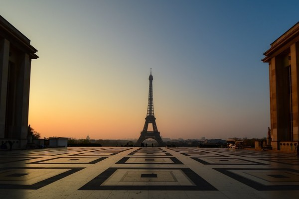

Places to discover
Here are a couple of destinations and travel scenes from the photo collection.
Bali-inspired beaches

Warm skies, palm trees, and peaceful water make tropical scenery a favorite for many travelers. A relaxing view can be just as memorable as a busy adventure.
The photo above shows a quiet, tropical sunset scene.
Sunrise from above
A balloon rising over historic buildings is a great example of why some travelers like early morning sightseeing.
Paris, France

Paris is known for famous buildings like the Eiffel Tower. Walking through the city can be a fun way to see the sights and learn about its history.